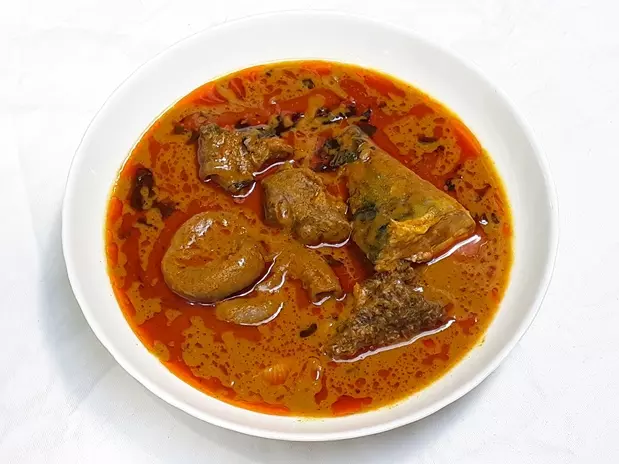

The Banga Soup Delicacy

Ingredients
- 1 Medium size Catfish or any preferred fresh fish
- Assorted Meats of your choice
- 1-2 Medium Dried Fish ( preferably catfish)
- 1 Tablespoon Ground Dried Crayfish
- 1-2 Tablespoons Banga Spice
- 1-2 Tablespoons Crushed Obeletientien leaves or Dried bitter leaves.
- 1 Oburunbebe stick
- 2 Scotch bonnet ( Atarodo)
- 1/2 Cup Periwinkles (optional)
- 1 Medium onion chopped
- 2 Tablespoons dried pepper or blended fresh pepper
- Salt and maggi to taste
Preparation
- Rinse the meat, add the diced onions, maggi, pepper and salt. Stir and leave to cook till the meat becomes tender.
- Add the stockfish and cook for another 10 minutes
- Wash the catfish with hot water and salt to remove the slim
- Remove from the meat, stockfish, and meat sock from the pot and set aside.
- Pour the palm nut concentrate inside the same pot. Dilute with some water and leftover meat stock from the boiled meat. Cover and leave to cook until the oil begins to float on top of the soup.
- Meanwhile, blend the scotch bonnet pepper and the remaining half onion and add to the palm nut.
- Add the Banga spice, smoked fish, meat, seasoning powder, salt, crayfish, and Banga stick. Cover and leave to cook for another 10 minutes.
- Stir in and bitter leaves. Leave to simmer till thickened to your taste.
- Remove the Oburunbebe stick
- Serve hot with starch, pounded yam, semolina, garri or fufu